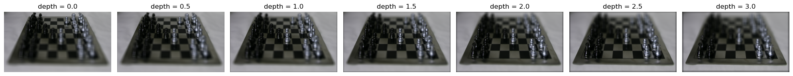
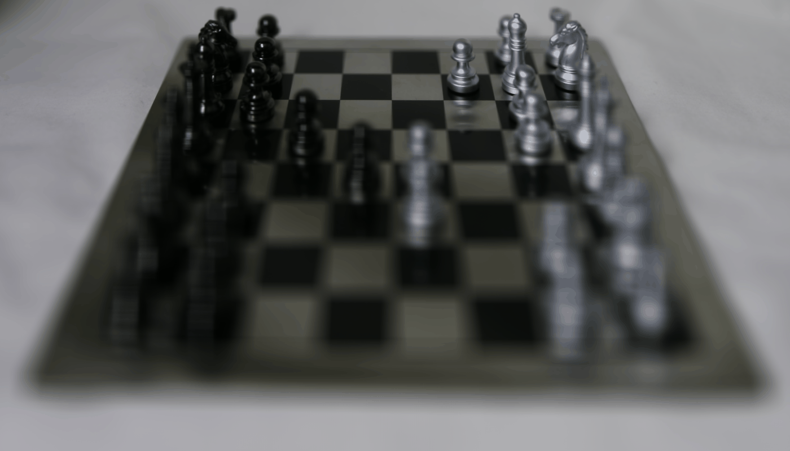
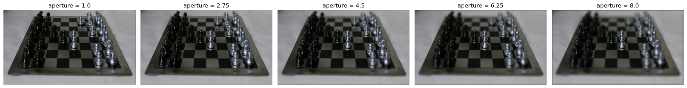
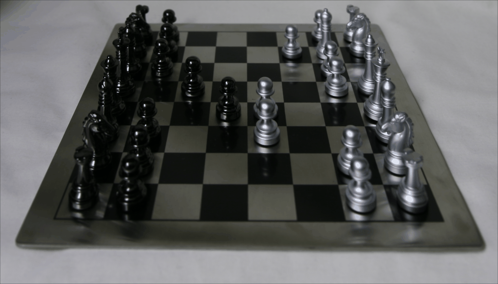
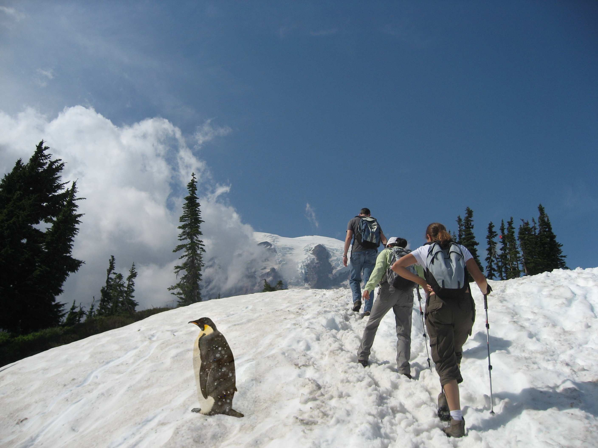
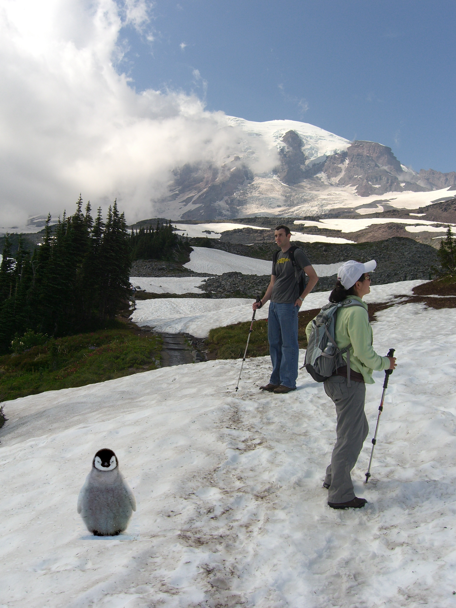

Implementing Depth Refocusing and Aperture Adjustment
Project Overview
This project implements key light field camera capabilities using multiple images taken from different
viewpoints.
Based on Ng et al.'s work, we demonstrate how simple operations like shifting and averaging can achieve
complex
photographic effects such as post-capture refocusing and aperture adjustment.
Part 1: Depth Refocusing
The depth refocusing implementation leverages the principle that distant objects show minimal position
changes
across different viewpoints, while nearby objects exhibit significant shifts. By applying appropriate
shifts
before averaging, we can focus on objects at different depths.
Implementation Approach
Center point fixed at (8,8) in the image grid
Shift calculation based on distance from center and depth factor
C values range from 0 to 3 with 7 evenly spaced steps (0, 0.5, 1.0, 1.5, 2.0, 2.5, 3.0)

Depth refocusing results at different C values

Animated sequence showing focus transition across depths
Part 2: Aperture Adjustment
The aperture adjustment simulates different lens apertures by controlling how many viewpoints
contribute
to the final image. Larger apertures use more viewpoints, creating stronger depth-of-field effects.
Implementation Approach
Aperture values range from 1.0 to 8.0 with 5 steps
Images selected based on distance from center (8,8)
Smaller apertures use fewer images, creating sharper overall images
Larger apertures incorporate more peripheral views, enhancing depth effects

Aperture adjustment results with different aperture sizes

Animated sequence showing aperture size transition
Conclusion
This project showed me the potential of light field photography. By capturing more information when
taking a picture, we can do things like change focus or adjust the depth of field afterwards. I was also surprised that the parallax effect makes it so that objects can appear to move a lot when closer and not a lot when further away. The last thing is that it was amazing how combining the parallax effect with
simple shifting and averaging operations can create interesting effects.
Gradient Domain Fusion Project
Implementing Poisson Blending and Mixed Gradients
Gradient Domain Processing
Gradient-domain processing enables seamless blending of objects between images by preserving gradient
information
while allowing intensity adjustments. This technique creates natural-looking composites by solving a
series of
optimization problems that maintain local image structure while eliminating visible seams.
Part 1: Toy Problem
I implement a gradient reconstruction system that recovers an image from its x and y gradients plus
a single intensity value.
The system solves a least squares problem by constructing sparse matrices that represent gradient
constraints. For each pixel,
I minimize (v(x+1,y)-v(x,y) - (s(x+1,y)-s(x,y)))² for x-gradients and (v(x,y+1)-v(x,y) -
(s(x,y+1)-s(x,y)))² for y-gradients,
plus an anchor constraint v(1,1)=s(1,1) to fix the absolute intensities.
Original image used for gradient extraction
Image reconstructed from gradients, achieving
an image reconstruction with minimal error (0.01 L2 norm)
Part 2: Poisson Blending
I implement Poisson blending by solving for pixel values that preserve gradients from the source
image while matching the
boundary conditions of the target image. The system uses sparse matrices to efficiently solve the
optimization problem.
For each pixel i in the source region and its neighbors j, I minimize (v_i - v_j - (s_i - s_j))²
when j is also in the
source region, and (v_i - t_j - (s_i - s_j))² when j is in the target region.
Poisson blending result showing seamless integration with
the target image
Another Poisson blending example with different source
and target images
Bells & Whistles: Mixed Gradients
I improved the basic Poisson blending by implementing mixed gradients, where instead of always using
source gradients,
I select the gradient with larger magnitude between source and target. This preserves strong edges
from both images,
leading to better preservation of high-frequency details. For each pixel pair (i,j), I compare |s_i
- s_j| with
|t_i - t_j| and use the larger gradient in the optimization.

Mixed gradient result showing enhanced edge preservation

Second mixed gradient example demonstrating consistent
edge handling